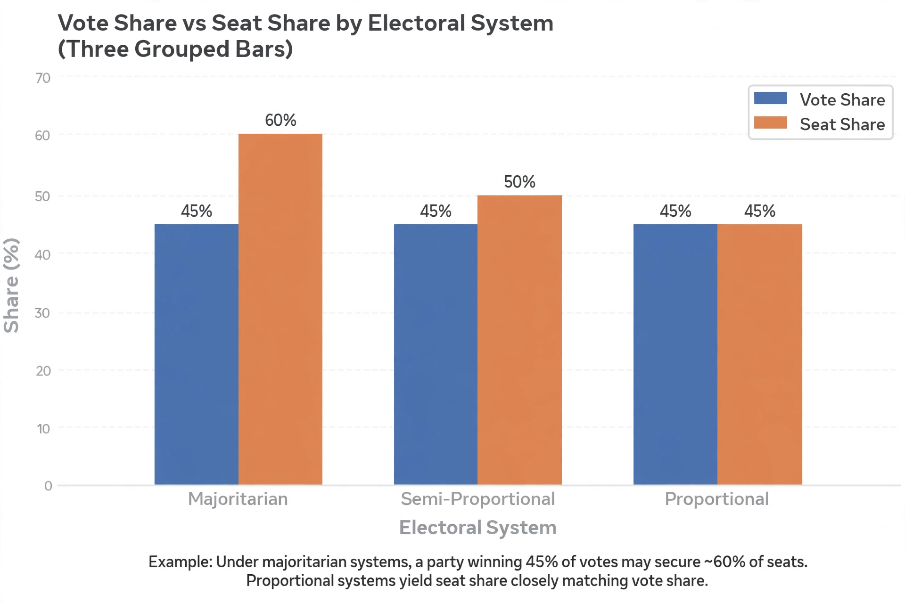

From Wikipedia, the free encyclopedia
Semi-proportional representation describes electoral systems that achieve outcomes in between those of majoritarian and fully proportional representation systems. Such systems generally allow minority groups some representation, but not in full proportion to their vote share. They are typically candidate-based, non-party systems originally designed to ensure that a cohesive majority cannot take every seat in a multi-member district.

Semi-proportional systems share a family resemblance: simple ballots, no party lists or quotas such as the Droop quota, and outcomes that reward organisation and vote management. They often require parties to divide the vote evenly among their candidates — too many candidates or uneven support wastes votes — creating their own form of strategic voting at the party level. The single transferable vote of Thomas Hare, by contrast, is fully proportional because votes transfer rather than being wasted.
Categories: Proportional representation · Electoral systems